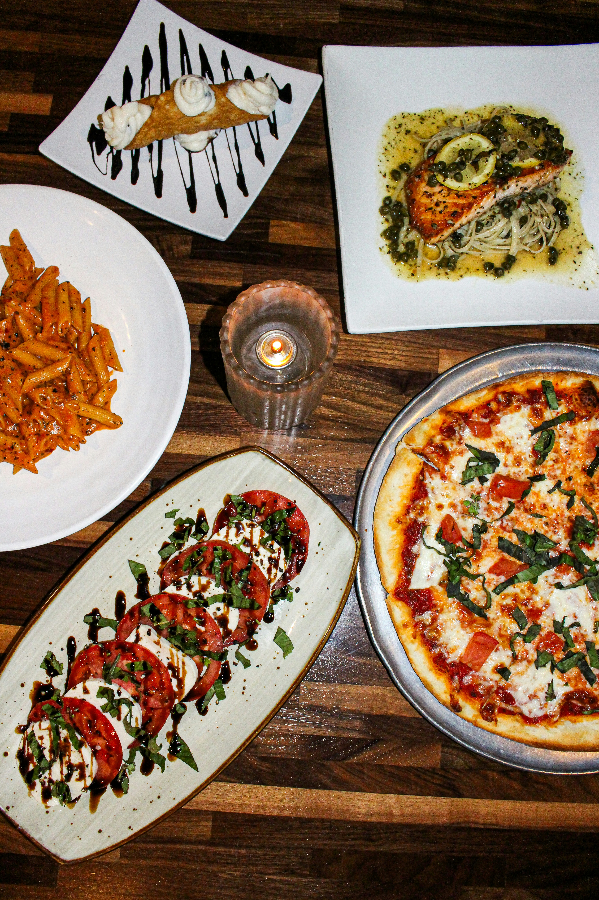
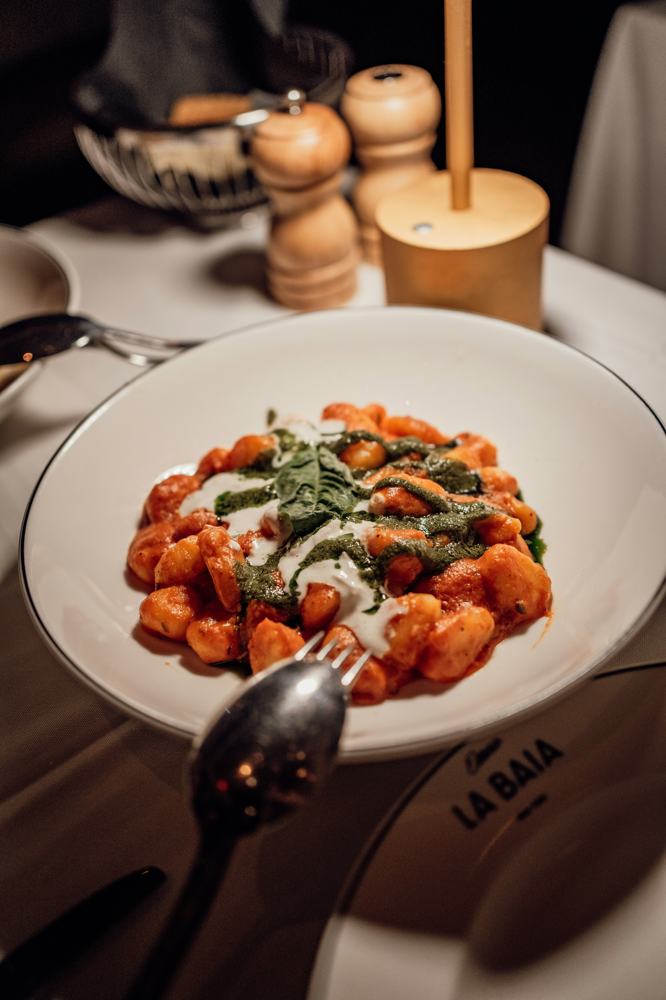
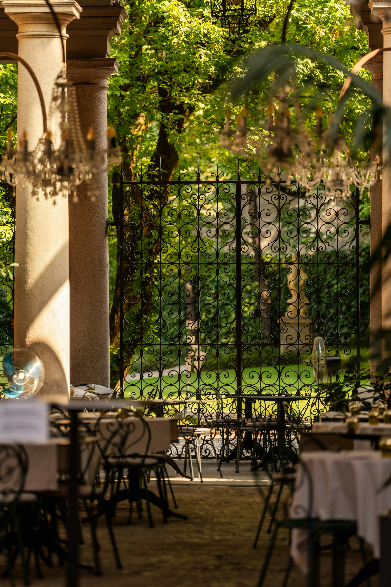

Centro
Unidade Centro
Av. Paulista, 1500
São Paulo - SP
No Italianinho, a cozinha é feita para reunir gente boa, mesa cheia e momentos simples que ficam na memória. Massa fresca, molho feito na hora e um atendimento que parece de família.


Av. Paulista, 1500
São Paulo - SP
Rua das Flores, 245
Campinas - SP
Alameda Santos, 890
São Paulo - SP

O Italianinho nasceu para levar a essência da cozinha italiana para a mesa dos brasileiros, com receitas tradicionais, ingredientes selecionados e um ambiente acolhedor que convida à conversa e ao cuidado.
Cada prato é preparado com atenção, do molho ao atendimento, para transformar uma simples refeição em um momento gostoso, fácil e memorável.